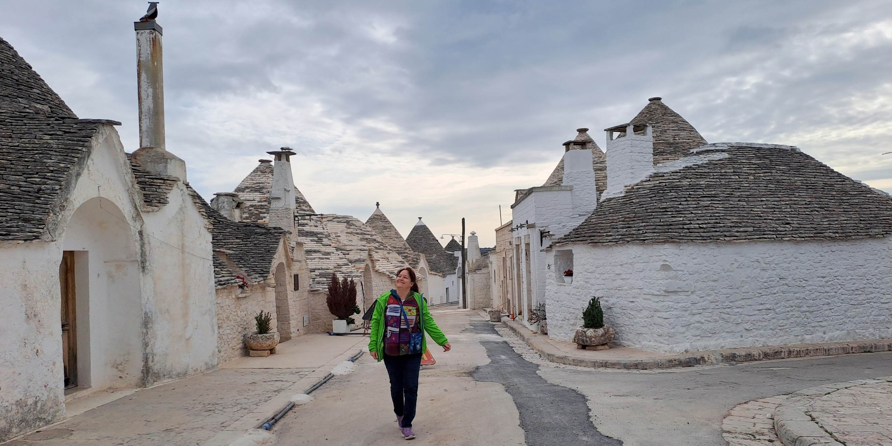
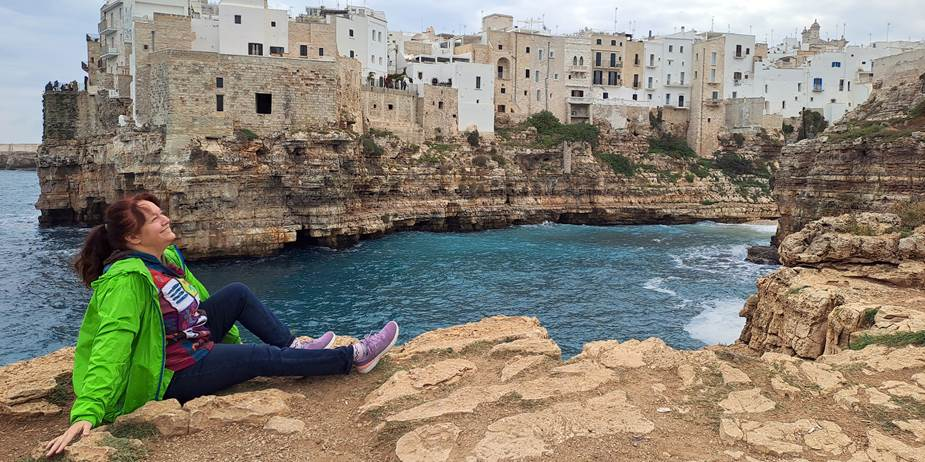
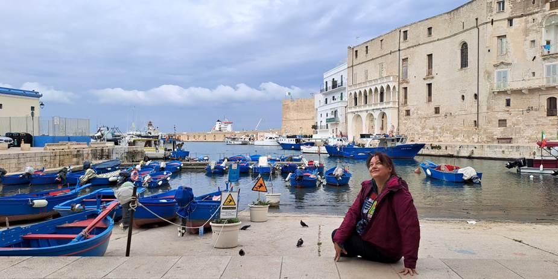
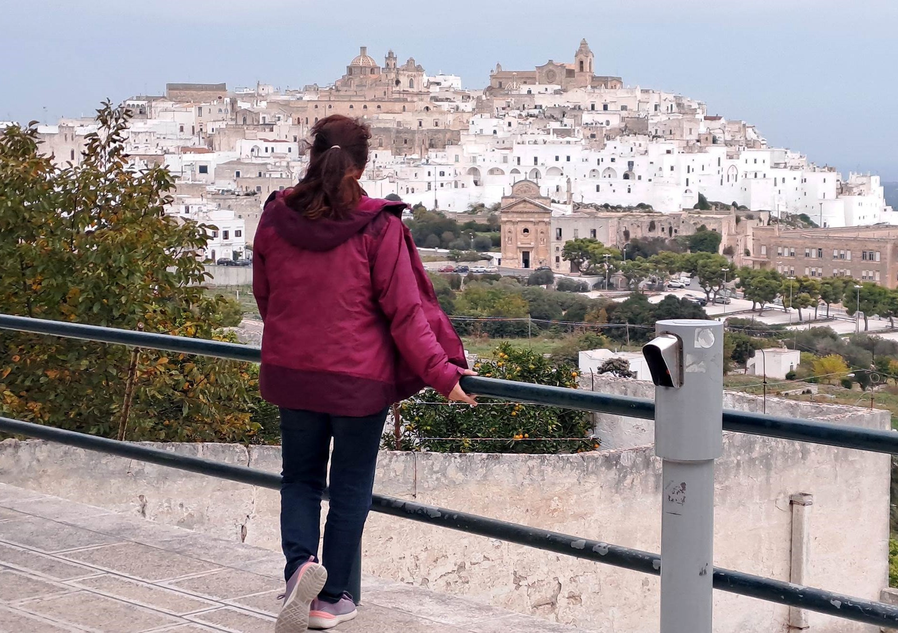
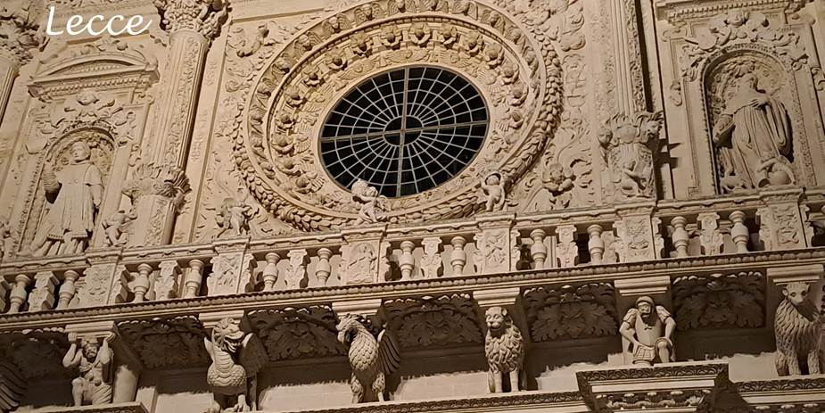
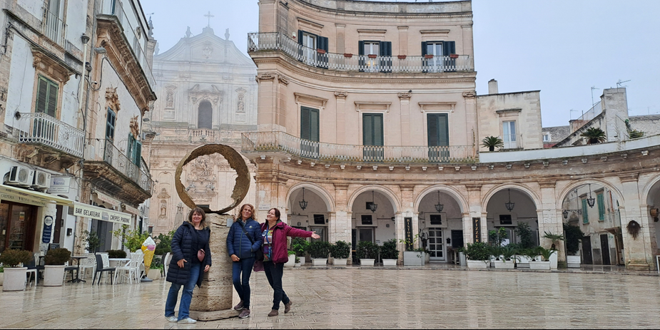
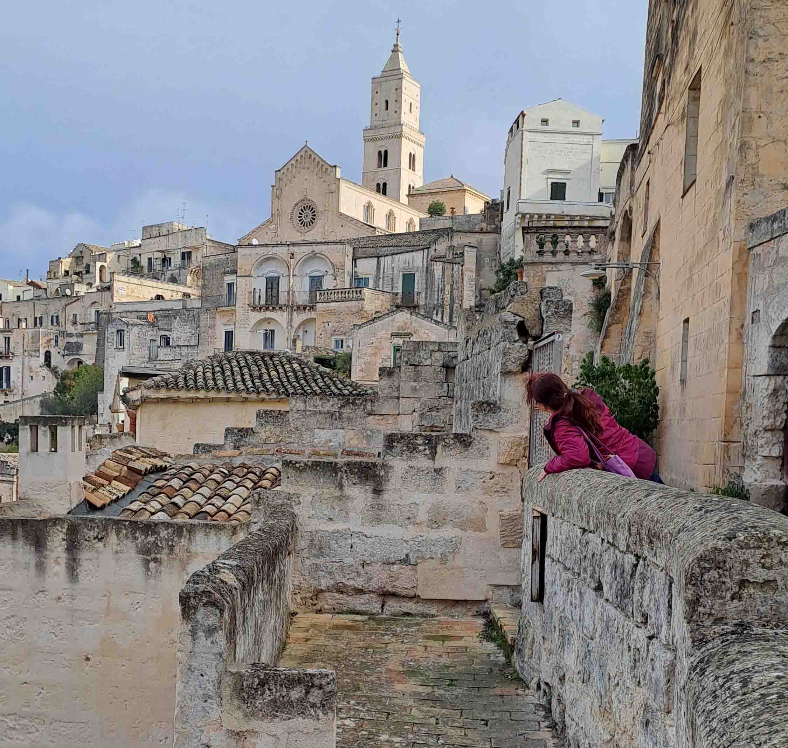
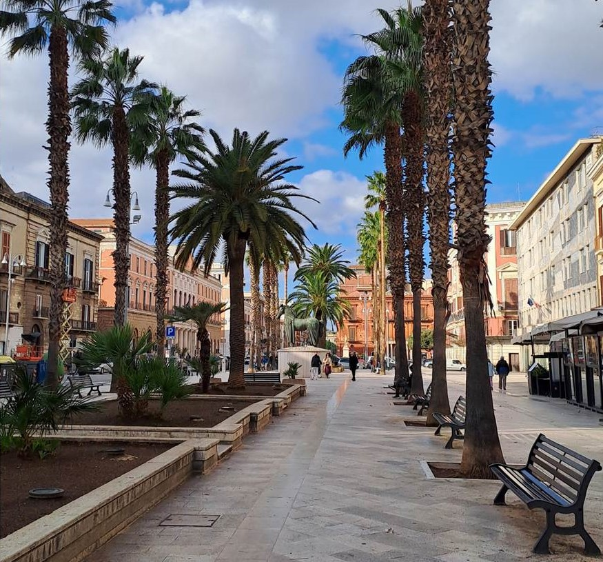

PULJA - ITALIJA
Avantura četiri drugarice | 12. – 16. novembar 2024.
Avantura četiri drugarice | 12. – 16. novembar 2024.
Prva stanica i noćenje u autentičnim Truli kućicama. Legenda kaže da su se krovovi rasklapali zbog poreza, a danas su pod zaštitom UNESCO-a.

Kuće na stenama, talasi i spomenik Domeniku Modunju gde smo širile ruke uz "Volare".

Više o Alberobelu i PolinjanuMonopoli je šarmantni lučki grad prepoznatljiv po srednjovekovnoj tvrđavi Karla V. i tradicionalnim plavim čamcima.

Kada umor stigne, tuk-tuk je spas. Vožnja kroz bele uličice pod ćebićima i potraga za "onim" šarenim vratima sa magneta koja su se sakrila iza ćoška crkve.

Velelepne kuće od žutog kamena, široke ulice i crkve isklesane detaljima anđela i aždaja.


Više o biserima PuljeIako tehnički u regionu Bazilikata, Matera je "šlag na tortu". Smeštaj u pećini staroj 7.000 godina sa kristalnim lusterima i kaminom pruža osećaj luksuzne praistorije.

Više o MateriDolazak u živopisni Bari Vecchia, stari deo grada gde se život odvija na ulici - bake prave orecchiette ispred kuće, a veš se suši iznad uskih prolaza.

Više o Bariju| Destinacija/Stavka | Zanimljivost / Cena |
|---|---|
| Let (Temišvar - Bari) | Povoljne low-cost varijante (WizzAir) |
| Rent-a-car savet | Kombinacija: Draganina dozvola + moja kreditna kartica = Prošlo je! (ako zaboravite jedno od ta dva) |
| Tuk-tuk (Ostuni) | Nezaboravna vožnja "babuški" pod ćebićima. Kad se noge umore eto rešenja. |
| Hrana | Lazanje, kroasani, sušene paprike, karbonara i fokače od najboljeg brašna |
Kada je najbolje posetiti Pulju?
Najbolji periodi su maj, jun i septembar, kada su temperature prijatne (između 20°C i 28°C), a gužve manje. Jul i avgust mogu biti veoma vreli i prepuni turista, dok je zima blaga, ali mnoga primorska mesta tada "utihnu".
Gde se smestiti kao baza za obilazak?
Bari je logistički najbolji, ali Monopoli ili Polignano a Mare, na obali, nude onaj autentični primorski šarm. Mesta poput Alberobela ili Ostunija su za unutrašnjost.
Da li je potreban automobil?
Iako vozovi povezuju veće gradove (Bari, Monopoli, Leće), automobil je neophodan ako želite da istražite skrivene plaže, vinograde i manja sela u unutrašnjosti gde javni prevoz nije čest.
Šta raditi ako vam na aerodromu nađu "tragove eksploziva"?
Nasmešite se, objasnite da ste se same pakovale i sačekajte izvinjenje. To je samo početak avanture!